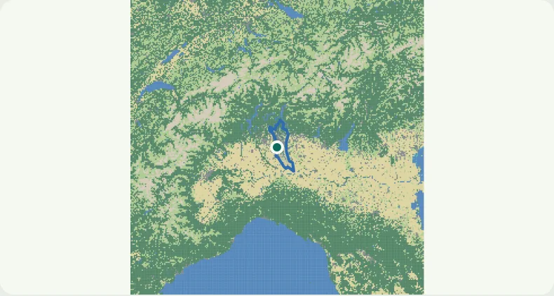
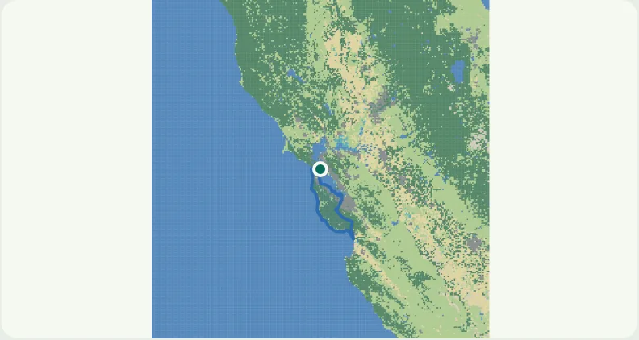
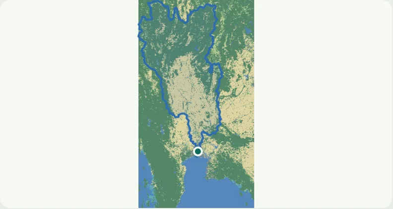

of the land that drains into Milan is already built up, so rain runs off fast into small rivers like the Seveso.
Open MilanFor planners, scientists and researchers
Threadlands maps heat, flooding, food and nature for any city region, finds the plan that does the most for your goal, and estimates what it would cost. Free, for any place on Earth.
Any city, town, county or postal code on Earth.
Loading the map…
The Threadlands resilience index, 0 to 100, with real projects counted in.
Parks, wetlands, trees and water projects, each with a public source. Anyone can add one.
The latest clear satellite pass over each place, compared with the same weeks in earlier years.
See where heat and flooding hit hardest, compare plans, and take a costed decision brief to council or funders.
Screen a site or a whole region in minutes, then export the map and plan to QGIS or ArcGIS for detailed work.
Compare places side by side, see who carries each risk, and find where nature-based projects do the most.
Three examples.

of the land that drains into Milan is already built up, so rain runs off fast into small rivers like the Seveso.
Open Milan
of the people within 50 km could be fed by the farmland within 50 km. The Bay Area eats from far away.
Open San Francisco
of river basin drains down through Bangkok, from the mountains of northern Thailand to the Gulf.
Open BangkokOver 120 cities on six continents open instantly. Anyone can add a place, and it is saved for the next person.